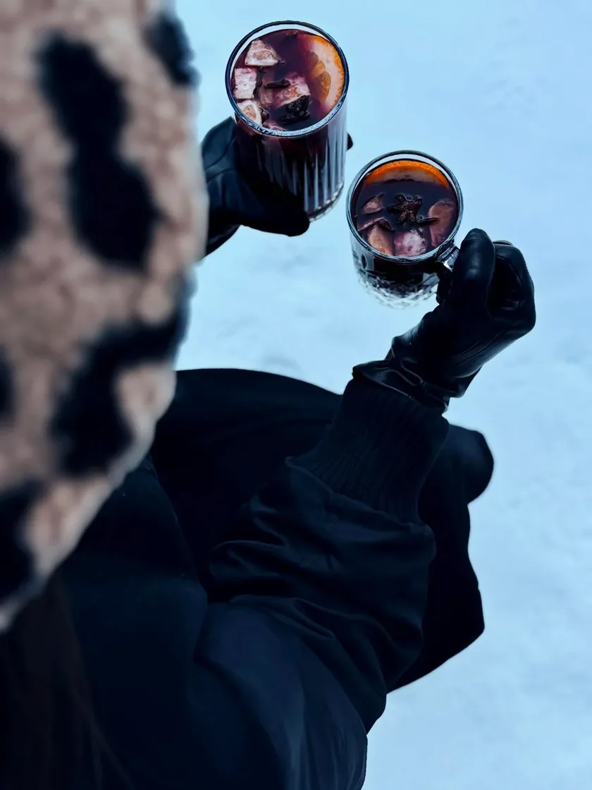
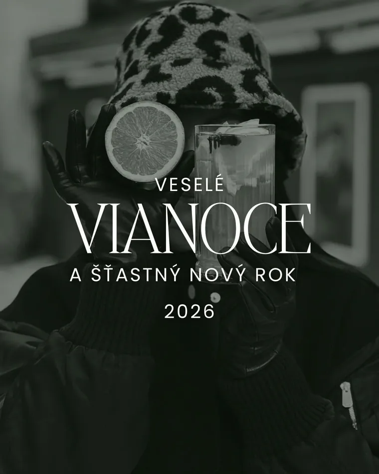
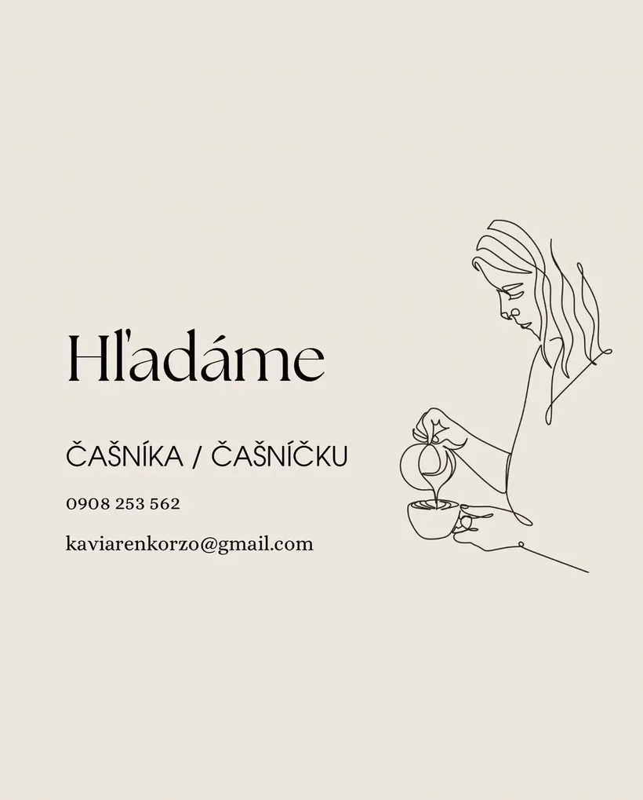

„Umelecká kaviareň“ · Banská Bystrica
Kaviareň a galéria na Dolnej 35
Kaviareň Korzo, na Facebooku predtým Kaviareň U Bothára. Tento rok tu visela výstava obrazov Splnený sen a hrala kapela Grey Fold.
Neznámy autorDva poháre v rukaviciachfotografia, nedatovanáZo stránky Kaviarne Korzo na Facebooku
- Adresa
- Dolná 35Banská Bystrica
- Telefón
- 0908 253 562
- kaviarenkorzo@gmail.com
- Otváracie hodiny
- Overte si ich telefonickyalebo na Facebooku kaviarne
Zbierka
Zo zbierky kaviarne
Fotografie, ktoré Korzo zverejnilo na svojom Facebooku. Pod každou visí popiska ako v galérii — a čo o diele nevieme, to nedopĺňame.


Na Facebooku sa Korzo predstavuje dvoma slovami: Umelecká kaviareň
.
Výstava Splnený sen visela v kaviarni aj v galérii v Podkroví na tej istej adrese. Pri kaviarni je aj posedenie vonku.
Program · 2026
Výstavy a koncerty
Dve podujatia z tohto roka, ako ich ohlásila kaviareň a portál BBonline.
-
27. 2. 2026 · 18:00Kaviareň Korzo
Grey Fold
Koncert · pop/rockKapela v obsadení spev, klávesy, bicie, gitara a basgitara. Plagát koncertu zverejnila kaviareň na Facebooku.
-
3. 3. – 3. 4. 2026Korzo a galéria v Podkroví
Splnený sen
Výstava obrazovObrazy dvoch autoriek, vernisáž 5. 3. 2026 o 17:00. Výstavu pripravilo Stredoslovenské osvetové stredisko.
Obe podujatia už prebehli. Ďalšie ohlasuje kaviareň na Facebooku.
Voľné miesto
Hľadáme čašníka / čašníčku
Hľadáme práve tebaPríspevok kaviarne na Facebooku, 29. 6. 2026
